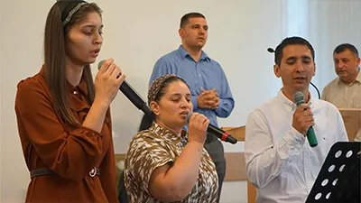

Vino să experimentezi închinarea, părtășia și Cuvântul lui Dumnezeu alături de noi.
Biserica Penticostală Speranța Perg a luat ființă în 8 noiembrie 2020, din dorința unui grup de credincioși de a avea o comunitate vie în care Dumnezeu să fie slujit cu credincioșie, iar Evanghelia lui Isus Christos să fie vestită cu putere.
Lucrarea a început cu aproximativ 23 de persoane, familii din Perg și împrejurimi și s-a dezvoltat prin rugăciune, viziune clară și implicare practică, în parteneriat cu Biserica Speranța Linz. Astăzi, biserica numără peste 100 de membri și este o comunitate caldă, unită în dragostea lui Christos.
Fii la curent cu cele mai noi anunțuri, evenimente și vești din viața Bisericii Speranța Perg. De la conferințe și tabere, până la seri de rugăciune și implicare în comunitate.
Nu rata niciun moment important. Urmărește noutățile noastre și fii parte din tot ce Dumnezeu lucrează în mijlocul nostru.
Mesaje relevante din Cuvântul lui Dumnezeu, menite să te zidească spiritual. Urmărește cel mai recent mesaj sau redă mesajele anterioare. Poți de asemenea să te alături nouă în direct, în fiecare duminică, de la ora 9:00 și 18:00!